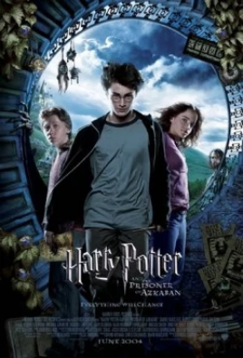

Esta es la historia de Harry Potter (Daniel Radcliffe), un niño ordinario de once años que sirve como una especie de esclavo para su tía y su tío, quien se entera de que en realidad es un mago y ha sido invitado a asistir a la Escuela de Brujería de Hogwarts. y Hechicería. Harry es arrebatado de su existencia mundana por Rubeus Hagrid (Robbie Coltrane), el jardinero de Hogwarts, y rápidamente arrojado a un mundo completamente extraño tanto para él como para el espectador. Famoso por un incidente que ocurrió en su nacimiento, Harry hace amigos fácilmente en su nueva escuela. Sin embargo, pronto descubre que el mundo mágico es mucho más peligroso para él de lo que hubiera imaginado, y rápidamente aprende que no todos los magos son de confianza.
Obligado a pasar sus vacaciones de verano con sus parientes muggles, Harry Potter (Daniel Radcliffe) se sorprende mucho cuando recibe una visita sorpresa: Dobby (Toby Jones), el elfo doméstico, que advierte a Harry que no regrese a Hogwarts, porque las cosas terribles son va a pasar. Harry decide ignorar la advertencia de Dobby y continúa con su horario preestablecido. Pero en Hogwarts están sucediendo cosas extrañas y terribles. De repente, Harry escucha voces misteriosas desde el interior de las paredes, los estudiantes nacidos de muggles están siendo atacados y un mensaje garabateado con sangre en la pared pone a todos en guardia: "La Cámara de los Secretos ha sido abierta. Enemigos del heredero, Tener cuidado".
Harry Potter (Daniel Radcliffe) está pasando por un momento difícil con sus familiares (una vez más). Huye después de usar magia para inflar a la hermana del tío Vernon (Richard Griffiths), Marge (Pam Ferris), que estaba siendo ofensiva con los padres de Harry. Inicialmente asustado por usar magia fuera de la escuela, se sorprende gratamente de que no será penalizado después de todo. Sin embargo, pronto se entera de que un peligroso criminal y ayudante de confianza de Voldemort, Sirius Black (Gary Oldman), ha escapado de la prisión de Azkaban y quiere matar a Harry para vengar al Señor Oscuro. Para empeorar las condiciones de Harry, viles criaturas llamadas Dementores son designadas para proteger las puertas de la escuela e inexplicablemente tienen el efecto más horrible en él. Poco sabe Harry que para finales de este año, muchos agujeros en su pasado (sea lo que sea que sepa de él) se llenarán y tendrá una visión más clara de lo que le depara el futuro.

El cuarto año de Harry (Daniel Radcliffe) en Hogwarts está a punto de comenzar y está disfrutando de las vacaciones de verano con sus amigos. Obtienen las entradas para la final de la Copa Mundial de Quidditch, pero después de que termina el partido, personas vestidas como los "mortífagos" de Lord Voldemort (Ralph Fiennes) prendieron fuego a todas las tiendas de campaña de los visitantes, junto con la aparición del símbolo de Voldemort. , la "Marca Oscura" en el cielo, que provoca un frenesí en la comunidad mágica. Ese mismo año, Hogwarts organiza el "Torneo de los tres magos", un torneo mágico entre tres conocidas escuelas de magia: Hogwarts, Beauxbatons y Durmstrang. Los concursantes deben tener más de diecisiete años y son elegidos por un objeto mágico llamado "El cáliz de fuego". Sin embargo, en la noche de la selección, el Cáliz arroja cuatro nombres en lugar de los tres habituales, y Harry, sin saberlo, es seleccionado como el Cuarto Campeón. Dado que la magia no se puede revertir, Harry se ve obligado a seguirla y enfrentarse a tres tareas extremadamente difíciles.
Después de un verano solitario en Privet Drive, Harry (Daniel Radcliffe) regresa a un Hogwarts lleno de mala fortuna. Pocos estudiantes y padres le creen a él o a Dumbledore (Sir Michael Gambon) que Voldemort (Ralph Fiennes) está realmente de vuelta. El ministerio decidió intervenir nombrando a una nueva profesora de Defensa Contra las Artes Oscuras, la profesora Dolores Umbridge (Imelda Staunton), que resulta ser la persona más desagradable que Harry haya conocido. Harry tampoco puede evitar robar miradas con la bella Cho Chang (Katie Leung). Para colmo, hay sueños que Harry no puede explicar y un misterio detrás de algo que Voldemort está buscando. Con todas estas cosas, Harry comienza uno de sus años más difíciles en el Colegio Hogwarts de Magia y Hechicería.
Durante el sexto año de Harry Potter en Hogwarts, encuentra un libro que una vez perteneció al misterioso Príncipe Mestizo que le gana el respeto de su nuevo profesor de Pociones, Horace Slughorn. Además, Dumbledore debe preparar a Harry para la última confrontación al descubrir el secreto detrás del poder de Voldemort. Mientras tanto, un enemigo oculto espera en las sombras para llevar a cabo una misión que le encomendó el Señor Oscuro.
El poder de Voldemort (Ralph Fiennes) es cada vez más fuerte. Ahora tiene el control sobre el Ministerio de Magia y Hogwarts. Harry (Daniel Radcliffe), Ron (Rupert Grint) y Hermione (Emma Watson) deciden terminar el trabajo de Dumbledore (Sir Michael Gambon) y encontrar el resto de los Horrocruxes para derrotar al Señor Oscuro. Pero quedan pocas esperanzas para el trío y el resto del Mundo Mágico, por lo que todo lo que hagan debe salir según lo planeado.
Harry (Daniel Radcliffe), Ron (Rupert Grint) y Hermione (Emma Watson) continúan su búsqueda para encontrar y destruir los tres Horrocruxes restantes de Voldemort (Ralph Fiennes), los objetos mágicos responsables de su inmortalidad. Pero a medida que se descubren las místicas Reliquias de la Muerte y Voldemort se entera de su misión, comienza la batalla más grande y la vida tal como la conocen nunca volverá a ser la misma.